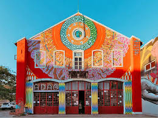
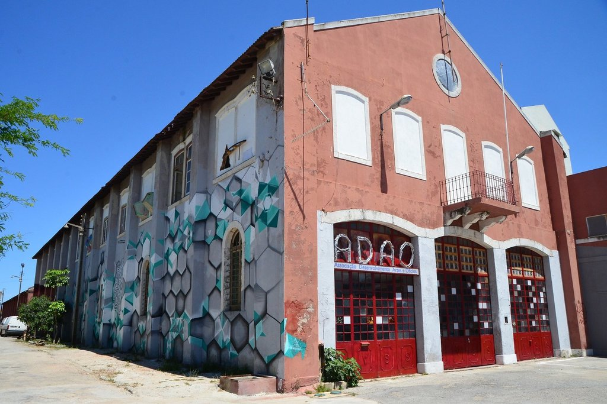
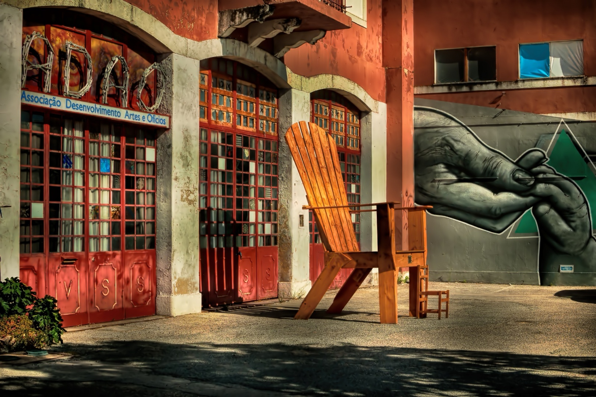
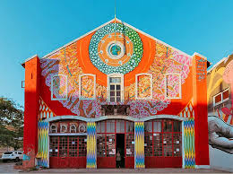
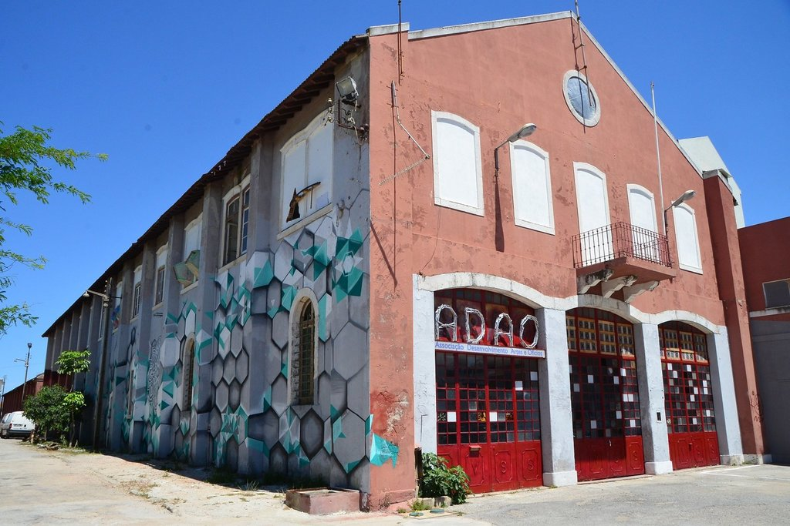
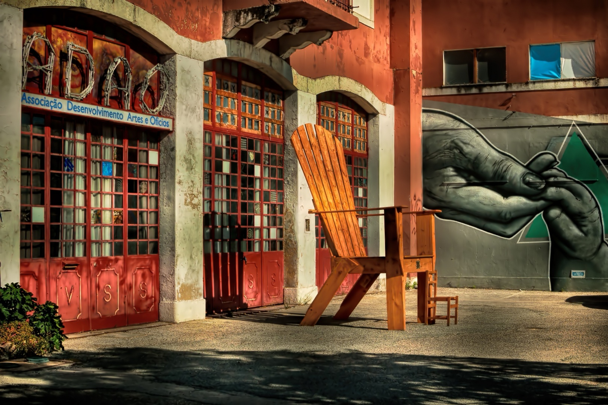

Introdução
A Adão é uma associação destinada a pomover a arte e cultura do Barreiro... O seu nome original é Associação de Desenvolvimento de artes e oficios . Comumente designada de apenas ADAO costuma ter open days nos quais os Habitantes custumão aderir para se diverter e conhecer um pouco da arte de varios artistas do Barreiro Os Open Days do Adão, são abertos a toda a gente podendo ser assim o Otimo Local para levar a familia, grupos de amigos e outros para conhecer a cultura no barreiro A sua pgina no intagram é @adao2830 nesta pagina podemos ver os proximos acontecimentos/opendays
 





Imagens retiradas de:
https://olhares.com/adao-foto8344705.html
https://www.cm-barreiro.pt/pages/694?event_id=1838
https://www.facebook.com/adaobarreiro/
https://www.youtube.com/watch?v=lOOeBMNCKlg
https://nit.pt/out-of-town/back-in-town/melhor-bairro-do-mundo-coisa-mais-linda-barreiro/attachment/229821